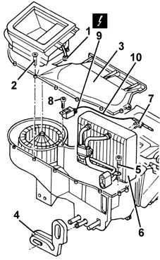

5040B64 sensor on evaporator for a/c ecu - r + r
- Path
- Procedures > 50 AUXILIARY UNITS > 5040 AIR CONDITIONING CASING AND COMPONENTS > 5040B system safety check devices > 5040B64 sensor on evaporator for a/c ecu - r + r
- Kind
- repair procedure (removal / refitting; the operation number is the code)
- Applies to
- all engines; all production periods
- Interactive page
- https://sloeber94.github.io/elrnDB-fMltpl/en/#/2891816
Applies to: all engines; all production periods
 Removing
Removing
 Refitting
Refitting7040A09 passenger air bag compartment cover - r r
2125C24 gear lever knob - r + r
7065C10 air conditioning control panel - r+r
7040A11 control panel lid - r + r
5560B10 analogue control panel - r+r
7040A77 glass holder on facia trim - r r
7010M16 rear electric window enablement switch - r+r
7040A96 facia glove compartment flap (1) lh or rh - r r (left and right sides)
5580C26 LOCK BARREL KEY/SWITCH for deactivating passenger 'AIR BAG - R.R.
7040A44 facia lh side cover - r r
7040A45 facia rh side cover - r r
7040A25 central facia trim - r r
5540C18 headlamp/light cluster alignment correction motor switch - r+r
7025A24 boot lid opening lever - r+r
7040L42 sill plate connection of one front door (1), lh or rh - r r (left and right sides)
Drain the coolant fluid (refer to op. 5040A10 Air conditioning refrigerant CIRCUIT - Draining and Refilling ).
5010B24 under-facia air ducts r r
Applies to: engines: 1.9 JTD 8V; all production periods
Applies to: all engines; all production periods
5040C12 air conditioner housing - r r with facia disconnected
1. Disconnect the electrical connection for the air intake actuator.
 | Name | Connector |
|---|---|---|
2 | Air intake actuator |
2. Undo the bolts.
3. Remove the cover.
4. Move the seal.
5. Undo the bolt.
6. Move the evaporator.
7. Disconnect the frost sensor for the evaporator.
8. Undo the bolt.
9. Disconnect the electrical connection for the frost sensor.
| Name | Connector |
|---|---|---|
9 | Air intake actuator |
10. Disconnect the cable for the frost sensor from the retainer and recover the frost sensor unit.

Applies to: all engines; all production periods
Refitting
RemovingCheck that the sensor is not damaged.
Position the frost sensor on the evaporator.
Connect the frost sensor cable to the retainer.
Connect the electrical connection and tighten the bolt.
Place the evaporator in the housing and tighten the bolt.
Connect the electrical connection.
5040C12 air conditioner housing - r r with facia disconnected
Applies to: engines: 1.9 JTD 8V; all production periods
Applies to: all engines; all production periods
1048A10 AIR CLEANER FILTERING ELEMENT - REPLACE
5580C22 AIR BAG MODULE - Passenger side - R.R.
5010B24 under-facia air ducts r r
Repressurize the coolant fluid (refer to op. 5040A10 Air conditioning refrigerant CIRCUIT - Draining and Refilling ).
7040L42 sill plate connection of one front door (1), lh or rh - r r (left and right sides)
7025A24 boot lid opening lever - r+r
5540C18 headlamp/light cluster alignment correction motor switch - r+r
7040A25 central facia trim - r r
7040A45 facia rh side cover - r r
7040A44 facia lh side cover - r r
5580C26 LOCK BARREL KEY/SWITCH for deactivating passenger 'AIR BAG - R.R.
7040A96 facia glove compartment flap (1) lh or rh - r r (left and right sides)
7010M16 rear electric window enablement switch - r+r
7040A77 glass holder on facia trim - r r
5560B10 analogue control panel - r+r
7040A11 control panel lid - r + r
7065C10 air conditioning control panel - r+r
2125C24 gear lever knob - r + r
Topics linked from this page (29)
- 1016A10 sound-proofing cover - r + r
- 1048A10 AIR CLEANER FILTERING ELEMENT - REPLACE
- 2125C24 gear lever knob - r + r
- 5010B24 under-facia air ducts r r
- 5040A10 Air conditioning refrigerant CIRCUIT - Draining and Refilling
- 5040C12 air conditioner housing - r r with facia disconnected
- 5530B10 battery - r+r
- 5540C18 headlamp/light cluster alignment correction motor switch - r+r
- 5560B10 analogue control panel - r+r
- 5570T80 car radio unit - r+r
- 5580C AIR BAG SYSTEM
- 5580C22 AIR BAG MODULE - Passenger side - R.R.
- 5580C26 LOCK BARREL KEY/SWITCH for deactivating passenger 'AIR BAG - R.R.
- 7010M16 rear electric window enablement switch - r+r
- 7025A24 boot lid opening lever - r+r
- 7040A04 facia lower trim-r r
- 7040A09 passenger air bag compartment cover - r r
- 7040A11 control panel lid - r + r
- 7040A25 central facia trim - r r
- 7040A37 fuse box cover - r r
- 7040A44 facia lh side cover - r r
- 7040A45 facia rh side cover - r r
- 7040A77 glass holder on facia trim - r r
- 7040A96 facia glove compartment flap (1) lh or rh - r r
- 7040L20 tunnel trim - r r
- 7040L42 sill plate connection of one front door (1), lh or rh - r r
- 7065C10 air conditioning control panel - r+r
- 7065C42 ashtray (one) r+r
- N82 Air intake actuator